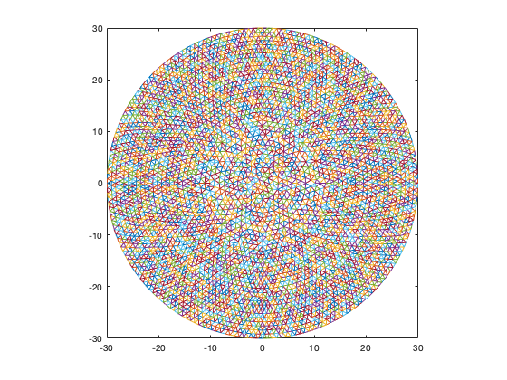
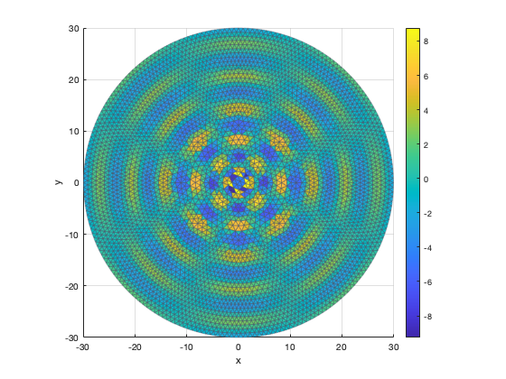
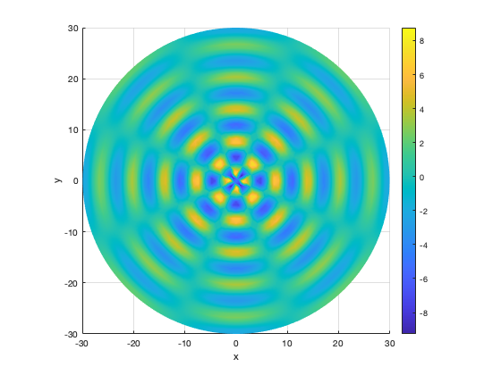

Contents
Clean
clear all, close all, clc;
Set path for input data
dataPath = '~/GitHub/numerical-analysis-mathematical-neuroscience/Data/Spots-Disk/';
Toggle for generating or loading data
generateData = false;
Generate or load mesh
if generateData
R = 30; hmax = 0.03;
mesh = GenerateMesh(R,hmax,dataPath);
else
fileName = fullfile(dataPath,'mesh.mat');
mesh = load(fileName);
end
Plot mesh
x = mesh.nodes(:,1); y = mesh.nodes(:,2); z = 0*x;
trimesh(mesh.elements,x,y);
axis square

Plot function
[theta,rho] = cart2pol(x,y);
a = 10; b = 0.05; omega = 4;
u = a*exp(-b*rho).*(b*cos(rho) + sin(rho)).*cos(omega*theta);
plotOpts.clim = 'auto';
plotOpts.view = [0 90];
Plot showing mesh
PlotField(u,mesh.nodes,mesh.elements,plotOpts);
axis tight;

Interpolated plot
PlotField(u,mesh.nodes,mesh.elements,plotOpts);
shading interp; axis tight;

Function GenerateMesh.m
function mesh = GenerateMesh(r,hmax,dataPath)
if nargin < 3 || isempty(dataPath)
saveFiles = false;
else
saveFiles = true;
end
model = createpde();
geometryFromEdges(model,@circleg);
mesh = generateMesh(model,"Hmax",hmax,GeometricOrder="linear");
nodes = mesh.Nodes';
elements = mesh.Elements';
x = nodes(:,1); y = nodes(:,2); z = zeros(size(x));
[theta,rho] = cart2pol(x,y);
[x,y] = pol2cart(theta, r*rho);
nodes = [x, y, z];
mesh = [];
mesh.nodes = nodes;
mesh.elements = elements;
if saveFiles
meshFile = fullfile(dataPath,'mesh.mat');
nodesFile = fullfile(dataPath,'nodes.dat');
elementsFile = fullfile(dataPath,'elements.dat');
save(meshFile,'nodes','elements');
disp(sprintf('Saved file %s',meshFile));
fileID = fopen(nodesFile,'w');
fprintf(fileID,'#%16.12s %16.12s %16.12s\n', 'x', 'y', 'z');
fprintf(fileID,' %16.12f %16.12f %16.12f\n', [x y z]');
fclose(fileID);
disp(sprintf('Saved file %s',nodesFile));
fileID = fopen(elementsFile,'w');
fprintf(fileID,'# %12s %12s %12s\n', 'node 1', 'node2', 'node3');
fprintf(fileID,' %12i %12i %12i\n', elements');
fclose(fileID);
disp(sprintf('Saved file %s',elementsFile));
end
end
Function PlotField.m
function fh = PlotField(u,nodes,elem,opts)
if ~isfield(opts,'xlim')
opts.xlim = 'auto';
end
if ~isfield(opts,'ylim')
opts.ylim = 'auto';
end
if ~isfield(opts,'zlim')
opts.zlim = 'auto';
end
if ~isfield(opts,'clim')
opts.clim = 'auto';
end
if ~isfield(opts,'view')
opts.view = 3;
end
if ~isfield(opts,'axis')
opts.axis = 'equal';
end
fh = trisurf(elem,nodes(:,1),nodes(:,2),nodes(:,3),u);
fh.EdgeColor = '#4C566A';
fh.EdgeAlpha = 0.4;
colorbar;
clim(opts.clim);
view(opts.view);
axis(opts.axis)
xlabel('x');
ylabel('y');
zlabel('z');
xlim(opts.xlim);
ylim(opts.ylim);
zlim(opts.zlim);
end